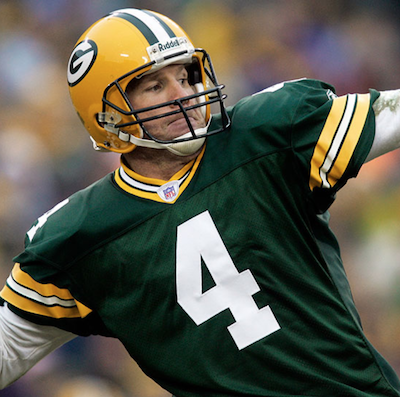
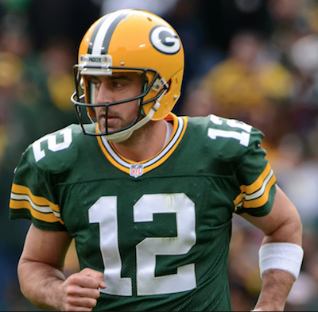
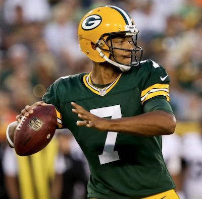
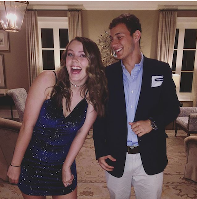
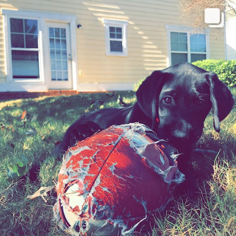
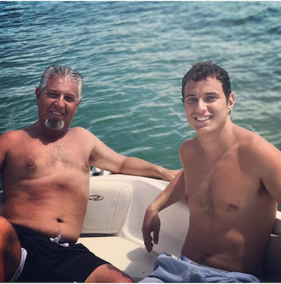

Favre | Rodgers | Hundley
Dating back to the early 1990’s, the Green Bay Packers have been blessed with two of the greatest quarterbacks that the NFL has ever seen- and one whom we hope will be the next great. Beginning with Brett Irving Favre, who played from the early 90’s until 2008, the Packers franchise has been a force to reckon with. Mr. Favre, who holds a position in nearly every major passing category, was considered a hall-of- fame quarterback before his career was even complete.
Here is a look at Green Bay's Quarterback comparisons.
|  |  |  |
Brett Favre |
Aaron Rodgers |
Brett Hundley |
|
|
|
|
Following in Favre’s footsteps is the current, and perhaps even more legendary, Aaron Rodgers. Though he’s suffering through a tragic collar bone injury this season, Rodgers has reigned as the most elite quarterback in the league throughout his tenure. Blessing the Packers with a Super Bowl victory in 2010 has solidified his status as an all-time Packers great and future hall of famer.
Lastly, due to injury suffered by Aaron Rodgers, is the electric Brett Hundley. Though he’s young, this fifth-round draft prospect from UCLA has high hopes to continue to the remarkable status of the franchise. The young quarterback has much to prove in the opportunity that he has recently been given, but Packers fans remain faithful.
Watch this highlight reel of Hundley's win over the Bears
|  |  |  |
Am I on my tip toes or did she have to take off her heels? |
Best dawg in the Classic City |
Sam Junior and Sam Senior |